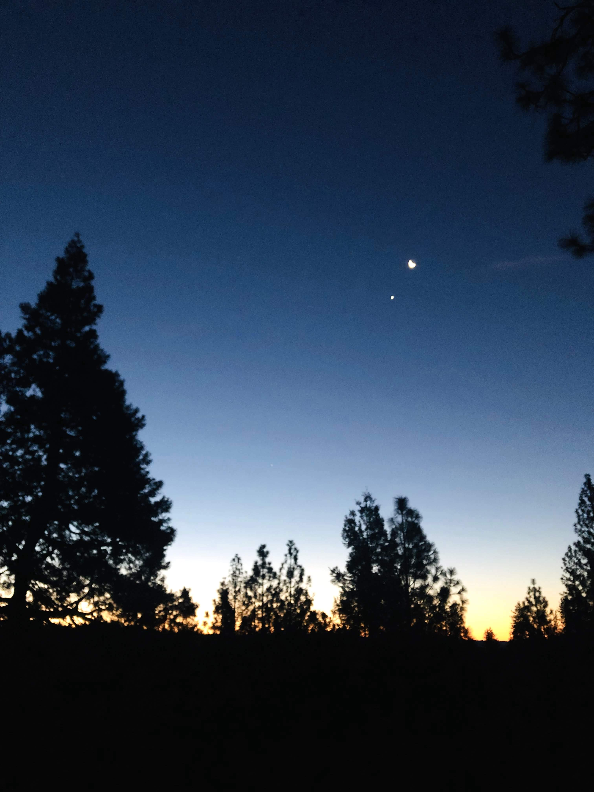

My God, my God, why have you forsaken me?
It seems that these words have come from my young mouth and mind a time or two… it’s weird, though, since I have yet to really enter into the trials of life – I mean, I’m just a mere quarter century old with so much to learn and so much to find true about life. But nevertheless, there have been those times where I ask my God why me, why now, why here, why again?
I remember back to when I was little and the idea of not having a daddy never entered even my mind. It was something that just didn’t bother me. Though my mom constantly told me that God’s ideal family included a father and a mother, she did so well as both that I never felt that I was without. I had this inclination that we had the most perfect family, that we were the lucky ones; surely ours was better than my friends’ situations where their parents fought all the time.
I guess that was until I grew to be about seven or so when I began to realize what I might be missing, that father/daughter dances existed, and that I wasn’t really that normal after all… I remember distinctly my feeling of confusion and dismay when, one Sunday in Sunday School, we were to be making ties for our dads in honor of Father’s Day. Even now I can enter myself as I was – small eyes darting around the room, standing at the doorway, not wanting to bring the most obvious fact out of the depths of my heart: but I don’t have a daddy. Oh, my God, my God, why have you forsaken me?
As the years pass, my desire to be affirmed by my father comes and goes but, as I take the time to look back on the experiences that life has afforded me I see how my God has grown me for this exact time, this exact place, and will continue to do so until I become the woman that He has created me to be. Until the daughter that He named before time began, sees herself in the eyes of her Father.
Without the lack of an earthly daddy I wouldn’t appreciate my big brother, who, one day, will be an excellent father and who wore that ridiculous blue jean tie that I thought was unstylish even at seven. My God, my God, why have you remembered me?
Without the lack of an earthly daddy I wouldn’t have a heart to serve the unloved, to show love to those who don’t know how to return it, and to try to make a difference in a man’s life who might possibly pass my love forward to his little girl. My God, my God, why have you chosen me?
Without the lack of an earthly daddy I wouldn’t know my heavenly father as intimately as I do today. In my loneliest hour, in the middle of the night, I get to crawl into the arms of a Father who holds my future in the palm of his hands. Because I’ve realized that for all the times I’ve felt forsaken, abandoned, forgotten, passed by, overlooked, and rejected, my God is walking right beside me because His plan is greater than I could ever imagine. My God, my God, why have you accepted me?
I see now that, at times, I have to be separated from God’s presence, like Christ was on the cross, to ensure that His perfect plan for my life is put in place. We can never see it during the storm and we wonder how He could leave us at such crucial and painful times but it’s in trial is where we see the King in a whole new light, where I have found more of Nicole than months and years of walking moderately would allow.
That Christ would love me just that much, to sacrifice his life for mine… it makes me wonder – with all the yes’ when there should have been nos, with all of the right turns when I should have gone left, with the multitude of times that I’ve turned my back - my God, my God, why have you not yet forsaken me?